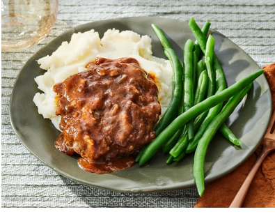

Home
Steak

Ingridients
- Beef This Salisbury steak recipe starts with 1.5 pounds of ground beef.
- Canned soup A can of condensed French onion soup adds moisture, richness, and flavor to the patties. It also serves as the base for the gravy.
- Bread crumbs Bread crumbs give the patties structure.
- Egg An egg helps hold the patties together.
- Seasonings These easy Salisbury steaks are simply seasoned with salt and black pepper. Mustard powder enhances the flavor of the gravy.
- Flour All-purpose flour thickens the gravy.
- Sauces You'll need ketchup and Worcestershire sauce.
Steps
- Make and shape the patties.
- Brown the patties on both sides, then drain the excess fat.
- Make and season the gravy.
- Pour the gravy over the patties and continue cooking until the meat is cooked through.